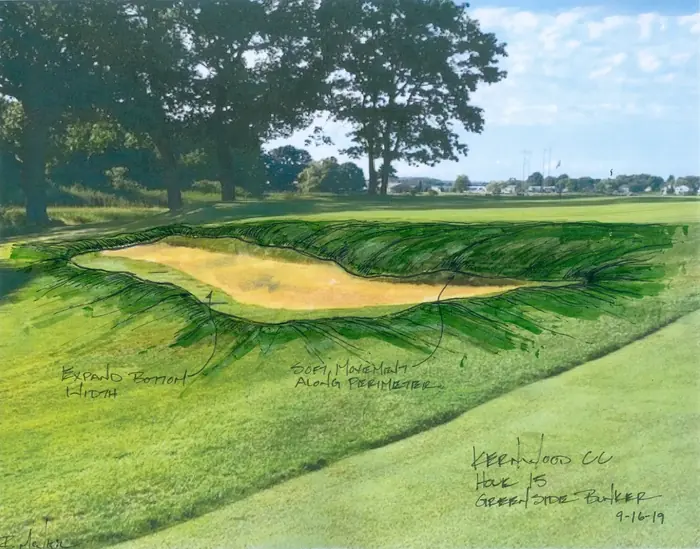
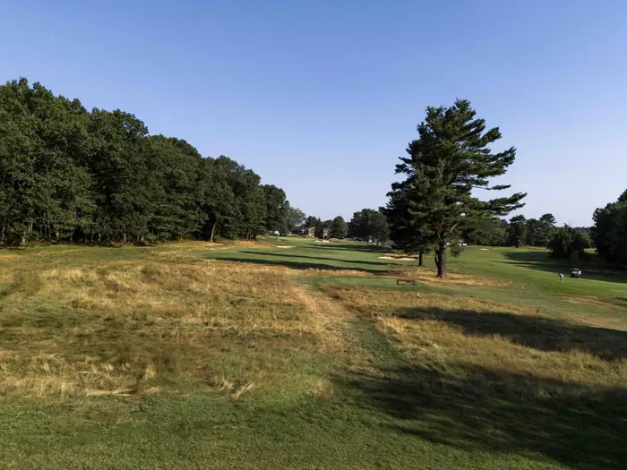
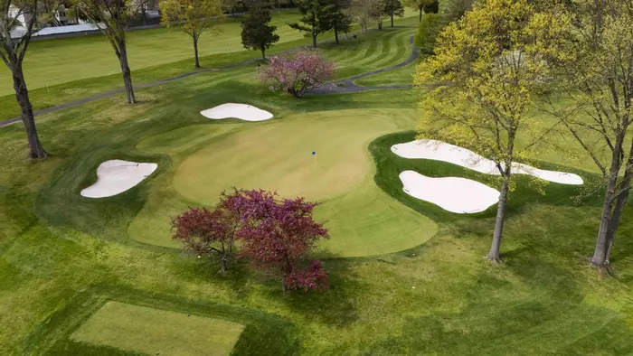
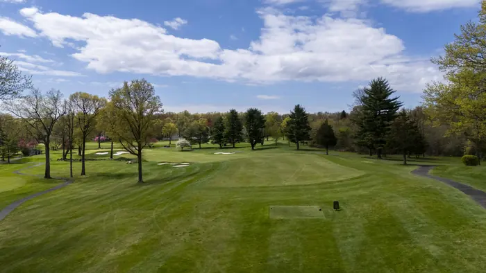

Robert McNeil, ASGCA · The Northeast Golf Company
Introduction
The Master Plan that follows is the product of an extended study of Valley Brook Golf Course — its routing, its agronomy, its infrastructure, and the experience it offers the golfers of Bergen County. It is presented hole by hole, with the overall plan as a point of reference, so that each recommendation can be read in the context of the whole.
Valley Brook today is a fundamentally sound golf course on a fine piece of ground. The bones of the 1999–2001 Bill Boswell redesign remain intact, the routing flows well, and the property continues to offer the variety of holes and shot values that a public course of this caliber should provide. The recommendations in this plan are a coordinated program of refinements including tree management to restore airflow and turf health, bunker work to renew the strategic interest and visual character of the course, tee adjustments to reintroduce yardage flexibility, and targeted short-game and circulation improvements at greens and tees throughout the property.
One set of conditions warrants particular attention. Hole 13 sits on the low ground along the western edge of the course, where the property meets Pascack Brook, and has come under increasing pressure from the brook itself. Addressing the flooding and bank erosion in this corridor is a foundational element of the plan: until the water and the bank are stabilized, the agronomic and aesthetic improvements proposed cannot fully take hold.
Each of the eighteen hole plans identifies its recommendations on the drawing itself, keyed to a brief set of notes. The recommendations vary in scope and priority — some are modest, agronomically driven moves; others are larger capital improvements best phased across multiple years. Taken together, they describe a course that is healthier, more visually coherent, more strategically engaging, and better positioned to serve Bergen County for the decades ahead.
One Coordinated Program
Program Summary
The recommendations across the eighteen hole pages are not eighteen independent projects. They are one coordinated program of work, organized into six categories that share a common rationale: restoring the agronomic health, strategic interest, and visual character of a course whose bones remain fundamentally sound.
| Category | Scope of Work |
|---|---|
| Tree Management | Removal of approximately 130–150 trees across the course to restore airflow, turf health, and playing corridors. Targeted planting of fescue framing for definition and separation between holes. |
| Bunker Renovation | Rebuild and enhance fairway and greenside bunkering across the course, updating styling and strategic function. New bunkers added at Holes 14 and 16. |
| Tee Adjustments | Strip, level, and expand existing tees to recover surface area; construct new mid and forward tees on selected holes to restore yardage flexibility lost to wear and grow-in. |
| Short-Game Areas | Develop low-cut pitch areas around greens to add variety and shot-making interest, particularly behind and beside greens currently bounded by rough. |
| Cart Path & Circulation | Reroute and reconstruct cart paths to widen playing corridors, eliminate awkward crossings, and improve flow through tee complexes and greens. |
| Hole 13 — Flood Resilience | Raise fairway and green above flood elevation; install subsurface drainage and force-main evacuation system; place targeted rip-rap at active scour points along Pascack Brook. |
The program spans a range of scopes and capital scales, from modest moves undertaken in routine maintenance seasons to larger capital improvements appropriate for phased implementation over multiple years.
A Consistent Design Vocabulary
Design “Dictionary”
The hole pages refer repeatedly to a set of design elements — bunkering, fescue framing, pitch areas, tree management, and tee complexes. These five elements form the consistent design vocabulary of the plan, applied in varying combinations across all eighteen holes.

Bunkering
The proposed bunker character at Valley Brook is defined by long, natural lines and soft shouldering. Bunkers are shaped to follow the natural movement of the surrounding ground rather than imposed as discrete geometric forms, with edges that flow into the contour of the fairway or green surround. The shouldering is held low and softened to avoid the steep faces that complicate maintenance and shorten a bunker’s life — visually impactful from the tee and approach, while remaining maintainable on a public-course budget. Where existing bunkers no longer serve a clear strategic purpose, they are consolidated or removed rather than rebuilt.

Fescue Framing
Fescue framing refers to areas of lower-input, naturalized fescue grasses established at the edges of playing corridors and between adjacent holes. With a lower maintenance cost than mown rough, it visually defines hole edges, separates corridors, and introduces a softer, more textural character to the property. At Valley Brook, fescue framing is intended to work in concert with tree management — establishing the edges of holes through grass rather than canopy.

Pitch Areas
Pitch areas are closely-mown grass surrounds extending beyond the putting green, maintained at fairway height or slightly above. A ball missing the green rolls into a pitch area rather than collecting in deep rough, presenting a range of recovery options — bump-and-run, lofted pitch, or putt — rather than a single forced response. At Valley Brook, pitch areas are proposed at most green complexes, and in several locations are designed as continuous strands connecting adjacent holes, creating a visually coherent short-game character across the property.

Tree Management
Tree management refers to the selective removal of trees that compromise turf health, restrict airflow, narrow strategic playing corridors, or block sightlines that define a hole’s character. The program is approached as a course-health and architectural exercise, not a clearing exercise. Every tree identified for removal is identified for a specific reason and reviewed in coordination with Bergen County. Healthy trees that frame holes, anchor corners, or contribute to the character of the property are retained, and removed trees are offset where appropriate by the establishment of fescue framing.